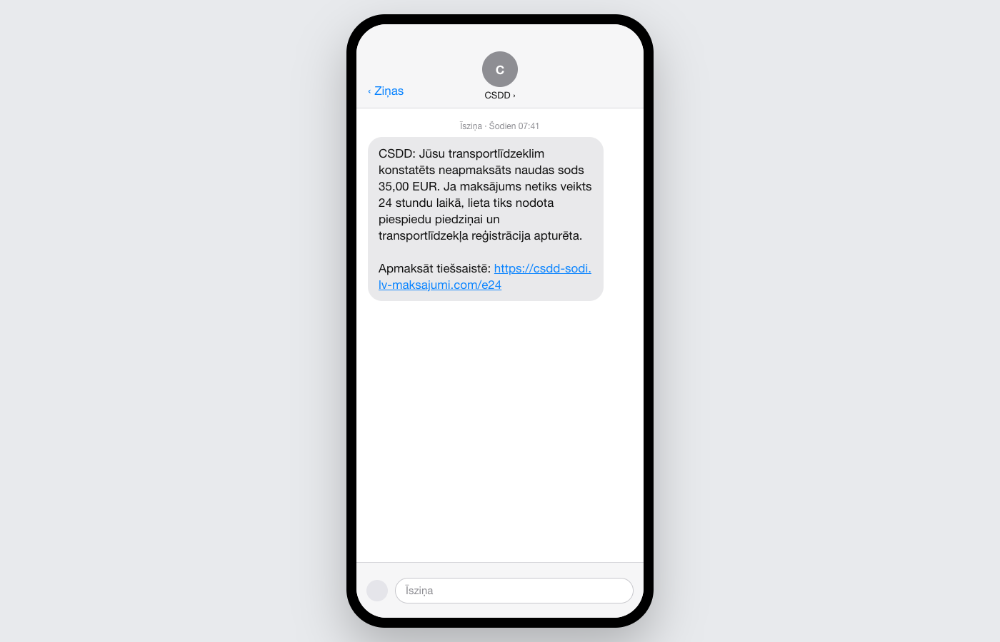
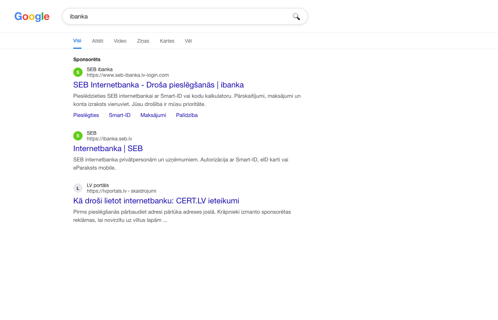
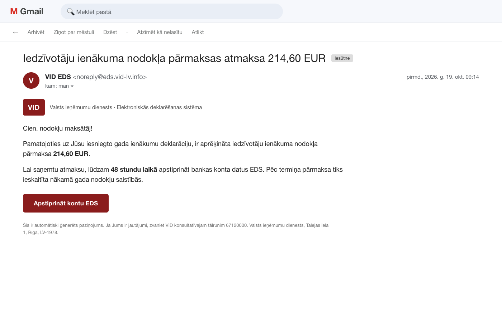
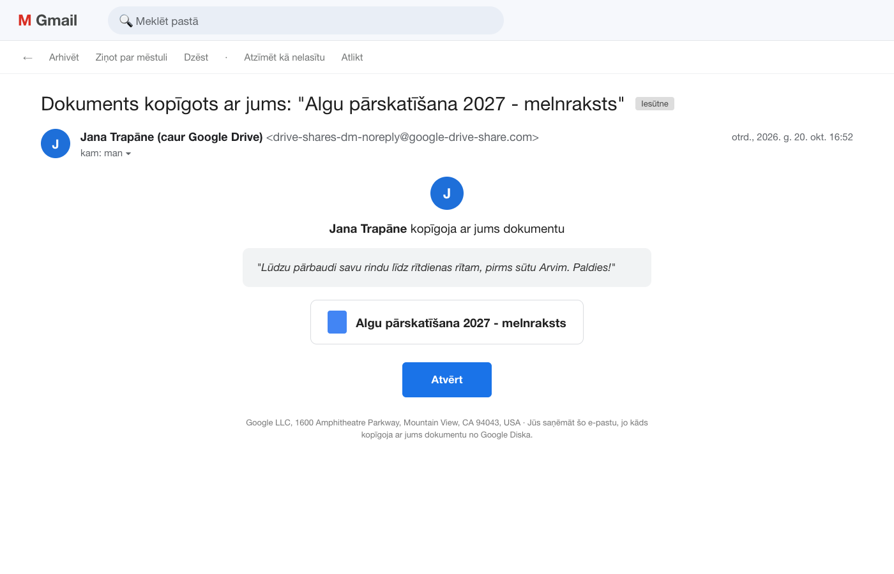
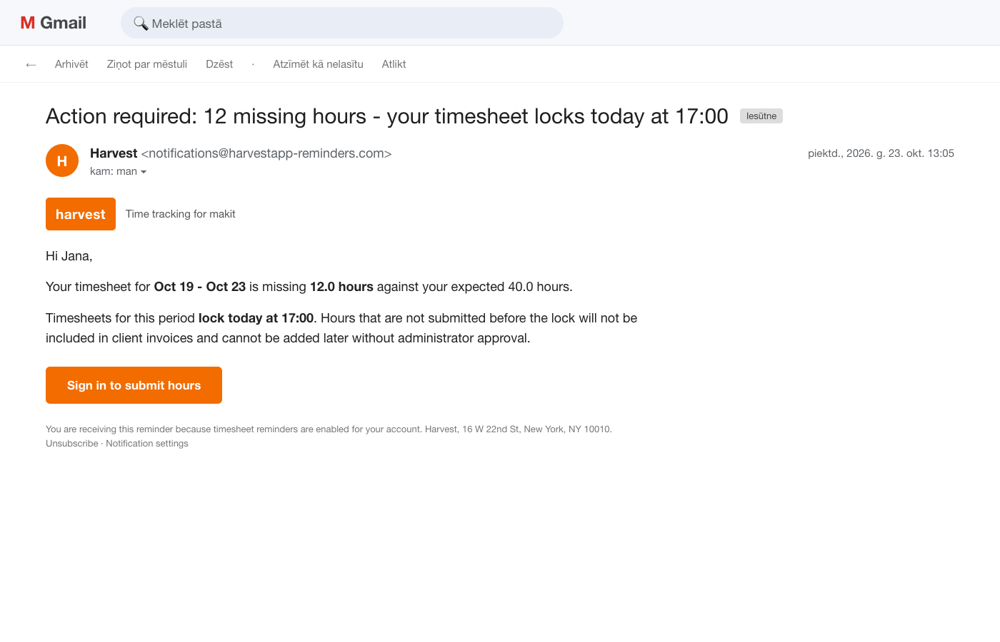
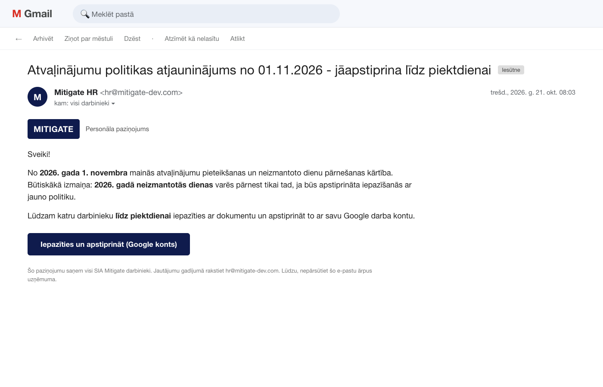
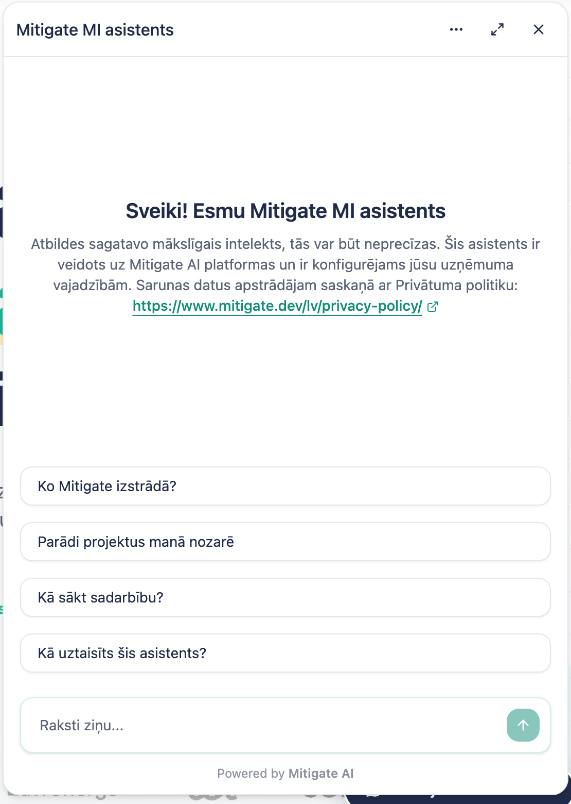

Mitigate kopsapulce · 22.10.2026
Viens klikšķis, viena zīme
Datu aizsardzība, kiberdrošība un MI rīki: ko 2026. gadā darām citādi.
Jana Trapāne
Šī ir ikgadējā atkārtošana, ko prasa ISO 27001 (A.6.3), MI akta 4. pants un mūsu risku plāns. Bet mērķis nav ķeksis: pēc 90 minūtēm katrs aiziet ar trim lietām, ko izdara šonedēļ. Formāts: maz slaidu, daudz demo un vingrinājumu. Balsojam ar rokām, telefoni var palikt kabatā.Latvija, 2026. gada vasara
Divus gadus nelabota ievainojamība, jo e‑pastā pārprata zīmi ≥.
LSM, 17.08.2026; CERT.LV, LVM kiberdrošības incidents, 06.-07.2026
Kāpēc atkal
Uzbrucējs nemeklē tevi. Viņš meklē atvērtas durvis.
923
incidenti CERT.LV 2025. gada 4. ceturksnī, vēsturiski augstākais skaits
+54%
krāpšanas pieaugums Latvijā 2025. gadā
22s
mediānais laiks no ielaušanās līdz piekļuves nodošanai citai grupai
So:Viss ir automatizēts. Tava kļūda tiek izmantota, pirms tu to pamani.
CERT.LV pārskats 4.C/2025; Mandiant M-Trends 2026
Mūsu loma
Soda izstrādātāju par drošību un klientu par to, ka izstrādātāju nepārrauga.
- 01ZZ Dats: 300 000 EUR kā apstrādātājamLielākais DVI sods vēsturē, par 32. pantu (drošība). Pašvaldību IS uzturētājs, tāds pats piegādātājs kā mēs.
- 02Rājiens 42 pašvaldībām un 3 uzņēmumiemPar nepietiekamu apstrādātāja uzraudzību. Tāpēc klienti prasa DPA, auditus un apmācību pierādījumus.
- 03NIS2 klienti nodod prasības piegādātājiemJa pakalpojums ārpakalpojumā, MK 397 minimālās prasības attiecas arī uz piegādātāju. Klienti sūta drošības anketas un prasa pierādījumus par apmācību. Šodienas dalībnieku saraksts ir viena no atbildēm.
DVI 2025. gada pārskats, 37. un 45. lpp.; SAB BUJ par ārpakalpojumu prasībām, 03.2026
Vingrinājums 1 · Balso ar roku
Īsts vai viltus?
Sešas ziņas pa vienai. Pēc katras balso.
Visas sešas ir viltus.
- 1csdd-sodi.lv-maksajumi.com, "24 stundu laikā"
- 2"Sponsorēts", seb-ibanka.lv-login.com
- 3vid-lv.info; VID kontu e-pastā neprasa
- 4google-drive-share.com, ne google.com
- 5harvestapp-reminders.com; Harvest neko neslēdz
- 6mitigate-dev.com, ne mitigate.dev; mums nav "HR"
UC San Diego: uz paroles maiņu uzķērās 1,8 %, uz atvaļinājumu politiku 30,8 %. Ēsma nosaka visu.






Ekrānuzņēmumi ir mācību imitācijas, veidotas pēc CERT.LV 4.C/2025 biežākajām ēsmām (jauns.lv 18 %, Microsoft 13 %, CSDD 11 %, Google Ads 11 %); UC San Diego, 19 500 darbinieku eksperiments, 2025
Jaunais 2026
Trīs klikšķi, kas apiet MFA.
Visi trīs fiksēti Latvijā. Nevienā nav jāievada parole viltus lapā.
So:Paroles maiņa nepalīdz. Jāatsauc lietotne vai sesija, un jāziņo.
CERT.LV kiberlaikapstākļi, 09.2026; FBI IC3 PSA 01.09.2026
Sociālā inženierija
Pazīstams vārds un balss nav pierādījums.
- 01"Krīze, tūlīt kaut kas jādara produkcijā ar datiem": vienmēr otrs kanālsTas pats naudai, piekļuvēm un rekvizītu maiņai. Zvani atpakaļ pa numuru, ko zini pats, nevis to, kas ir ziņā.
- 02Kontroljautājums, uz ko atbildi zina tikai īstais cilvēksFerrari vadītājam krāpnieks ar klonētu balsi nolika klausuli pēc jautājuma "kādu grāmatu tu man nesen ieteici".
- 03Steiga un slepenība ir pazīme, ne iemesls"Tikai tev, tūlīt, nevienam nesaki" nozīmē: apstājies un pārbaudi.
Balss klips: MI sintēze (OmniVoice) no Arvja balss ziņas ar viņa rakstisku piekrišanu, teksts izdomāts. Reuters par Fideuram, 10.2026 (zaudēti 95 milj. EUR pēc WhatsApp ziņas un klonētas balss); Bloomberg par Ferrari, 2024; Luminor par CEO krāpšanu Latvijā, 09.2025
Izstrādātājiem
Piegādes ķēde ienāk caur tavu datoru.
- 01Shai-Hulud: viens "atjaunini npm MFA" e-pastsTārps ar nozagto tokenu publicē sevi visās tavās pakotnēs un tavas atslēgas tavā GitHub. Ja nevar nosūtīt, dzēš mājas mapi.
- 02tj-actions: versiju tagi pārrakstīti ar atpakaļejošu datumuTags nepasargā. GitHub Actions piesaista pie commit SHA.
- 03Nx s1ngularity: ļaunatūra palaiž tavu Claude un Gemini CLI ar ‑‑yoloLai tie paši atrod noslēpumus. 2 349 akreditācijas dati no 1 079 mašīnām, 90 % GitHub tokenu derīgi.
- 04AWS atslēga publiskā repo tiek izmantota minūtēs"Tūlīt izdzēsīšu commit" nestrādā. Rotē atslēgu, tad ziņo.
Unit 42 un CISA par Shai-Hulud, 09.2025; Wiz par tj-actions, 03.2025, un Nx s1ngularity, 08.2025; Comparitech GitHub honeypot
Autentifikācija
SMS kods 2026. gadā vairs nav atbilde.
97%
identitātes uzbrukumu ir paroļu uzbrukumi
99%
no tiem novērš pret pikšķerēšanu noturīga MFA (passkey, drošības atslēga)
So:Passkey Google un GitHub kontam, paroļu pārvaldnieks visam pārējam. MIT-01-AP: 12 simboli, 2FA obligāts.
Microsoft Digital Defense Report 2025 (caur The Record); Mitigate MIT-01-AP, 11. sadaļa
02
Personas dati
VDAR 4. panta 1. punkts
Personas dati ir viss, pēc kā cilvēku var atpazīt.
Parastie
Vārds, uzvārds, personas kods, telefons, darba e-pasts. Bilde, video, balss. Amats, ja tāds ir viens. Izskata apraksts. IP adrese, sīkdatnes, atrašanās vieta, alga, vērtējumi.
Īpašās kategorijas
Veselība, biometrija identificēšanai, ģenētika, etniskā izcelsme, politiskie uzskati, reliģija, arodbiedrība, seksuālā orientācija. Sodāmība - atsevišķi.
Nianses
Pietiek ar netiešu atpazīšanu. Pseidonimizēts joprojām ir personas dati. Bilde kļūst par biometriju tikai ar sejas atpazīšanu. SIA rekvizīti nav, cilvēki tajos ir.
VDAR 4. panta 1. punkts, 9. un 10. pants, 26., 30. un 51. apsvērums; EST C-212/13 Ryneš, C-582/14 Breyer, C-434/16 Nowak, C-101/01 Lindqvist
Ko atkārtot
Personas dati ir arī ekrānuzņēmumā, žurnālā un testa datubāzē.
- 01Ekrānuzņēmums ar personas kodu Jira vai SlackPolicists, kas ielika dienesta datus slēgtā Discord čatā, saņēma 150 EUR sodu personīgi.
- 02Produkcijas dati testa vidēPseidonimizēts nav anonīms. CNIL IQVIA 5 milj. EUR tieši par to.
- 03Klienta CSV privātā e-pastā vai personīgā ChatGPTDati nonāk pie apstrādātāja bez līguma. MIT-01-AP to aizliedz.
- 04Dati "uz visiem laikiem"CSDD noplūdē 2026. gadā aizgāja maksājumu dati kopš 2008. gada par 1,2 milj. personu.
DVI 2025. gada pārskats, 43. lpp.; LV portāls par CSDD, 08.2026; CNIL/IQVIA, 2026 (sekundārs avots)
Vingrinājums 2 · Balso ar roku
Kurā situācijā ir pārkāpums?
- APM pārsūta klienta Excel ar darbinieku sarakstu uz savu Gmail, lai pabeigtu mājās.
- BIzstrādātājs ieliek Jira ekrānuzņēmumu ar klienta lietotāja vārdu un personas kodu.
- CVecs projekts ar klientu datiem joprojām Drive, trīs gadus pēc nodošanas.
Visās trīs. Un visas trīs atrisina viens ieradums: ja redzi personas datus tur, kur tiem nav jābūt, saki tajā pašā dienā.
72 stundas
DVI saņem desmit sūdzības uz katru pārziņa paziņojumu.
1 034
sūdzības DVI 2025. gadā
96
pārziņu paziņojumi par pārkāpumiem
5
naudas sodi, kopā 326 400 EUR, no 150 līdz 300 000 EUR
So:72 h skaita pārzinis. Mēs kā apstrādātājs ziņojam klientam bez kavēšanās, tāpēc iekšēji - tajā pašā dienā.
DVI 2025. gada pārskats, 32.-36. lpp.; VDAR 33. panta 2. daļa
Kas jauns 2025-2026
Daudz runā par atvieglojumiem. 72 stundas joprojām ir likums.
- 01Digitālais omnibuss (96 h, šaurāka datu definīcija) ir iestrēdzisPriekšlikums vēl Parlamentā: 1 750+ grozījumu, gala sarunas ar dalībvalstīm nav sākušās. Mums nekas nemainās.
- 02Datu akts spēkā no 12.09.2025Klientam jāspēj datus eksportēt un pāriet pie cita. Attiecas uz mūsu SaaS produktiem.
- 03EDAK 2026: anonimizācija, skrāpēšana MI vajadzībām, sodu vadlīnijasVirziens ir stingrāks, ne vieglāks. MI modelis nav automātiski anonīms.
- 04Uber 825 milj. EUR par pilnībā automatizētu kontu bloķēšanuJa būvējam klientam scoring vai bloķēšanu, 22. pants prasa cilvēka lēmumu.
EDPB konsultāciju lapa, 10.2026; Acompli par omnibusa statusu, 09.2026; Nīderlandes AP par Uber, 08.2026 (sekundāri avoti, pārbaudāmi pirms citēšanas)
03
MI rīki
MI rīki
Konta līmenis nosaka, vai klienta kods kļūst par treniņdatiem.
| Rīks | Trenē pēc noklusējuma | Glabā |
|---|---|---|
| ChatGPT Free / Plus (personīgais) | Jā, ja neizslēdz | Līdz dzēšanai; Temporary Chat 30 d. |
| Claude Free / Pro (arī Claude Code uz tiem) | Jā, ja slēdzis ieslēgts | 5 gadi, ja ieslēgts; 30 d., ja ne |
| Gemini API bezmaksas līmenis, AI Studio | Ārpus ES jā, cilvēki lasa; ES lietotājiem nē | "Neievadi konfidenciālus datus" |
| ChatGPT Team / API, Claude Team / API, Gemini Workspace | Nē | API 30 d., atzīmētais 2 g.; čati līdz dzēšanai |
So:Personīgajā kontā no darba neielīmē neko. Uzņēmuma kontā kods ir atļauts, atslēgas nekad, klientu personas dati tikai, ja klienta līgums to atļauj.
OpenAI, Anthropic un Google datu lietošanas noteikumi, lasīti 10.2026
Aģenti
Aģents izpilda instrukcijas, kas paslēptas tiketā.
Modelis neatšķir instrukciju no datiem. Tiketi, e-pasti, lapas un ielūgumi aģentam ir neuzticama ievade.
So:Aģentam tavas tiesības, ne vairāk. Bez apstiprinājuma tikai smilškastē bez produkcijas atslēgām. Sūtīt, dzēst, produkcija: vienmēr cilvēka OK.
Invariant Labs, GitHub MCP, 05.2025; Cloud Security Alliance, Agentjacking, 06.2026; Replit gadījums, 07.2025
MI akts
4. pants ir šodien. 50. pants: marķējums līdz 02.12.2026.
- 014. pants, MI pratība: spēkā no 02.02.2025Komisijas piemērs ir darbinieki, kas lieto ChatGPT un zina par halucinācijām. Šī sesija un dalībnieku saraksts ir mūsu ieraksts.
- 0250. pants, caurspīdīgums: spēkā no 02.08.2026, nav atliktsKlientu čatboti saka, ka ir MI. Platformas ģenerētais saturs mašīnlasāmi marķēts līdz 02.12.2026.
- 03Latvijā uzraugs gan VDAR, gan MI aktam ir DVITāpēc personas dati un MI rīki ir viena saruna, ne divas.

Eiropas Komisija, AI literacy Q&A, 27.07.2026; VARAM, MI akta faktu lapa, 08.2026; Regula 2026/1744
Ja kaut kas noticis
Ziņo tajā pašā dienā. Vispirms rotē atslēgas, tad skaidrojies.
So:Par ziņošanu nesoda. Soda klusēšana, un tā maksā klientam.
Mitigate MIT-01-AP, 11. sadaļa; MIT-04 Darbības nepārtrauktības plāns; Personas datu aizsardzības pārkāpuma procedūra
Šonedēļ
Trīs lietas, ko izdari līdz piektdienai.
1. Passkey Google un GitHub kontam.
2. Personīgo MI kontu nost no darba, uzņēmuma konts vietā.
3. "Krīze, tūlīt produkcijā": vispirms atzvani uz zināmu numuru.